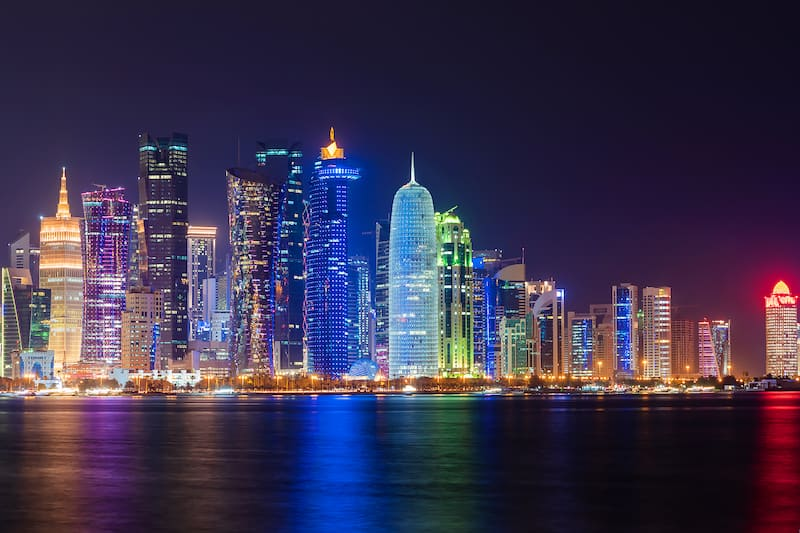

Copa do Mundo FIFA Catar 2022
A Copa do Mundo
A Copa do mundo é a mais importante competição de futebol do mundo, ela é realizada a cada 4 anos.
A primeira Copa foi realizada em 1930, sediada pelo Uruguai. Em 1942 e 1946 não houve competição por conta
da Segunda Guerra, retornando em 1950.
Desde 1930 até a Copa de 2018 tivemos 8 campeões diferentes, sendo o Brasil com maior número de títulos: 5;
seguido por Itália e Alemanha com 4 títulos; Argentina, Uruguai e França com 2 títulos; Espanha e Inglaterra
com 1 título cada.
A Copa do mundo FIFA 2022
será disputada no Catar (Oriente Médio) por 32 seleções, de 6 continentes diferentes, entre elas: Brasil,
Argentina, Holanda, Catar, Austrália, Japão, Alemanha.
Diferentemente de outros anos em que a copa tradicionalmente é realizada no verão do hemisfério, em 2022 a
Copa será realizada no Outono no hemisfério norte, por conta das altas temperatura no verão do Catar.
O CATAR

Um dos paises mais ricos do mundo é localizado na Ásia Ocidental, que faz parte dos Emirados Árabes e tendo
o petróleo, sua maior fonte de riqueza. Com aproximadamente 11.610 km², separado pelo estreito do Golfo
Pérsico do país Bahrein, sua capital Doha, língua oficial Árabe, população atual com 2.743.901 habitantes,
destes, apenas 313 mil, são nativos catarianos. A religião predominante é o Islamismo de governo monarquista
e constitucional, chefiado pela casa de Thani, o Emir Hamad bin Khalifa Al Thani. Sua bela e moderna capital
Doha, grande desenvolvimento tecnológico, recebeu em 2005 o 3º Jogos da Ásia Ocidental; Jogos Pan Arábicos,
em 2011; Campeonato Mundial de Squash, em 2012; Campeonato Mundial de Natação em Piscina Curta, em 2014;
entre outros. Com paisagens de tirar o fôlego, recebe este ano, a festa maior do futebol mundial a Copa do
Mundo de futebol 2022.